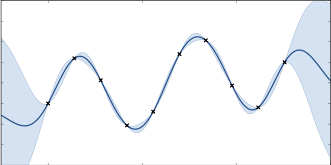
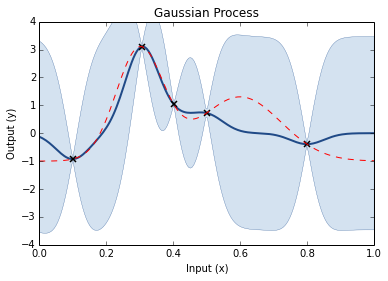

Chemical synthesis (reagent ratios/conditions/catalysts)
Brewing
Synthetic Biology
Computational problems
Finding the optimal assembly (according to some metric)
Training detection algorithms e.g. motifs, genes etc.
Optimising clustering methods
Really any optimisation problem (especially non-convex)
Specific examples
Given a protein of interest, which sequence will maximise expression? (e.g. 900nt = 300 codons ≈2300 possible sequences)
Given a set of sequencing data, which preprocessing/assembly parameters will produce the most likely assembly?
Naive experimental design (Grid Search)
So how would you more efficient choose your datapoints?
Probabilistically!
Prior is random draws from a process (GP)Add your dataCalculate the posterior

Step through of optimisation
Prior GP distributionChoose 3 Random Initial ValuesUse Acquisition Function to select next experimental pointAcquistion Functions trade-off between exploration and exploitationPick another point using the AQ and refit GP
Do the same againAnd againAnd againFor as long as you want...Until you are happy or have used your evaluation budget
Results
SpearSeq found the optimal assembly parameters for a test assembly in 4-5 trials
Bayesian Optimisation of synthetic construct expression found 5' UTR free fold energy and 5' UTR length are the two most importantfeatures in expression of the synthetic gene (Gonzalez, 2015)
Conclusion
Never just use a grid search, even a naive random search is better (Bergstra and Bengio, 2012)
Bayesian Optimisation for more efficient experimental design
Not limited to a single parameter (or objective)
Several recent relatively easy to use libraries and implementations (e.g. GPyOpt, Spearmint)
Tell me about experimental ideas that you think this might be applied to